Hand Suite#
Preview
The hand tolerances are provisional and not yet calibrated against glove recordings, so treat a result close to a limit as indicative.
Run this suite if your device publishes hand poses: a glove through its plugin, or a headset’s own optical hand tracking. You record one take of eleven scripted gestures; the checker reads the recording and its labels and returns a verdict.
Data |
|
Joints |
26 OpenXR joints per hand, 21 judged. PALM and the four non-thumb metacarpals are optional, so a 21-joint glove can pass. |
Script |
11 steps, seated at a table. About 2 minutes, paced by a timer: you press only Start recording. |
Checks |
40, in four groups: signal, hand shape, placement, and the scripted steps |
Your plugin |
Injects both hands with |
Finish Set Up the Tools first: tool environments, your plugin installed, and the headset connected through CloudXR.
How each step runs#

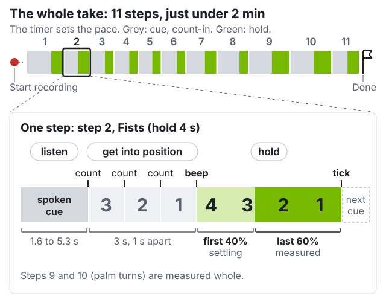
The cue is spoken, three counts lead in, a beep opens the hold, a tick closes it. The capture panel shows listen, get into position (3, 2, 1), hold.#
Audio is optional. The capture panel shows each cue as text, with the count. To hear the cues, connect speakers to the workstation; they do not play in the headset. Without speakers, keep the capture panel in the performer’s view or have the helper read each cue aloud; the beep is the moment the panel switches to hold.
Be in the pose by the beep, then keep still. Move during the cue and count-in.
The first 40% of each hold is ignored, so a slightly late arrival is fine.
The two rolls are measured whole, from beep to tick. The cue’s “at the tone” means the beep, not the count-in: start turning then, at least 90° out, then back.
Every step is also checked for the gross motion its name asks for
(segmentation.); a missed step gives retake.
The eleven steps#
Both hands perform every step together, except the two rolls.
hold 4 s “Rest both hands flat on the table, palms down, fingers together.”
Fingers straight and together, pressed onto the table. Do not hover.
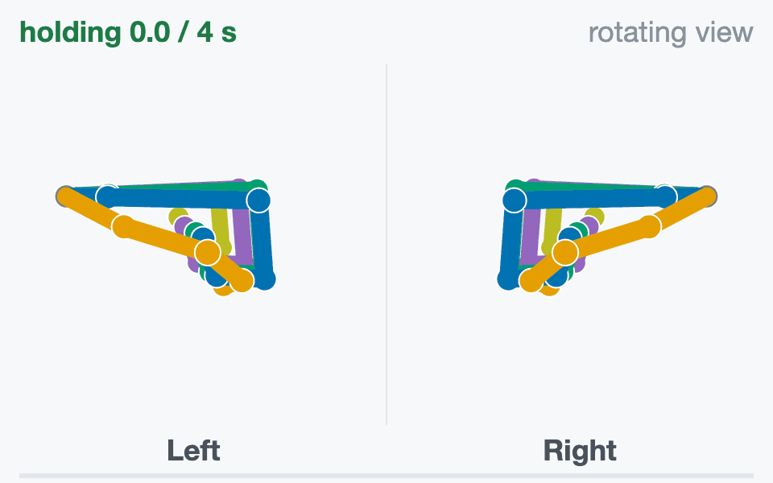
hold 4 s “Make two tight fists.”
Curl every finger fully, thumb wrapped over the fingers.
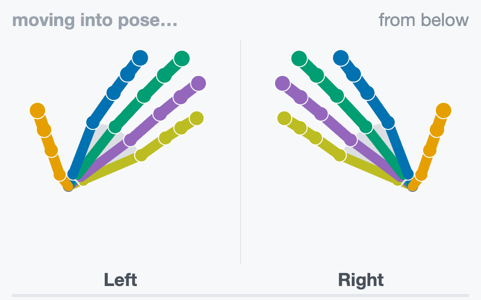
hold 3 s “Thumb to index fingertip.”
Pad to pad on both hands, the other fingers relaxed and open.
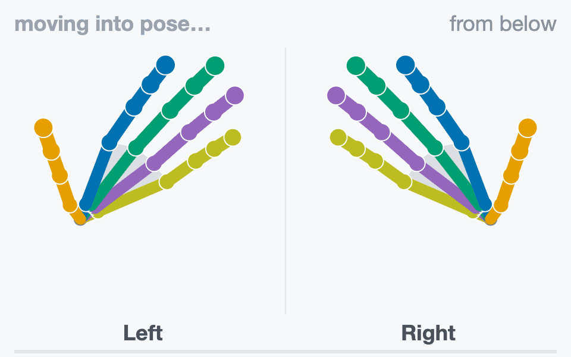
hold 3 s “Thumb to middle fingertip.”
Pad to pad on both hands, the other fingers relaxed and open.
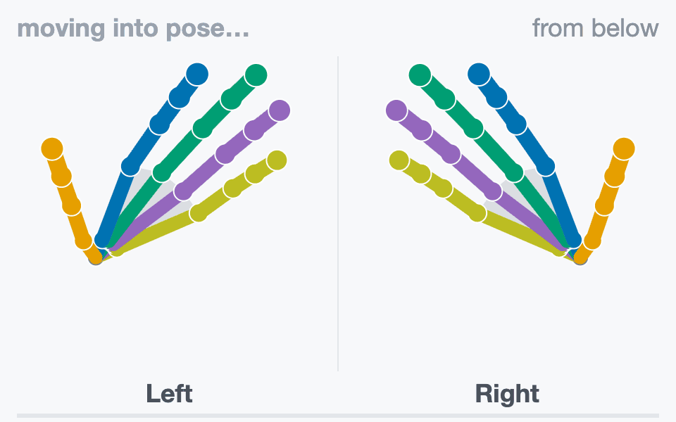
hold 3 s “Thumb to ring fingertip.”
Pad to pad on both hands, the other fingers relaxed and open.
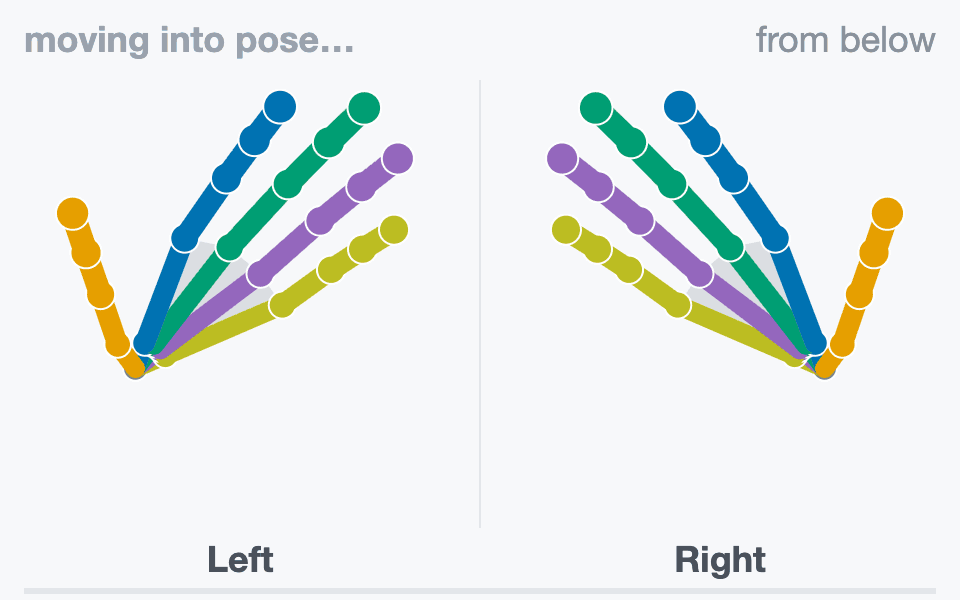
hold 3 s “Thumb to little fingertip.”
Pad to pad on both hands, the other fingers relaxed and open.
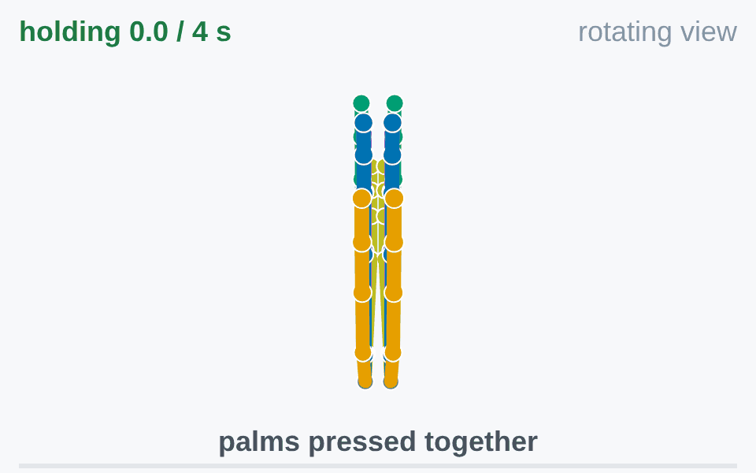
hold 4 s “Press your palms together, fingers up.”
Palms flat against each other, fingers up, thumbs closed alongside the index.
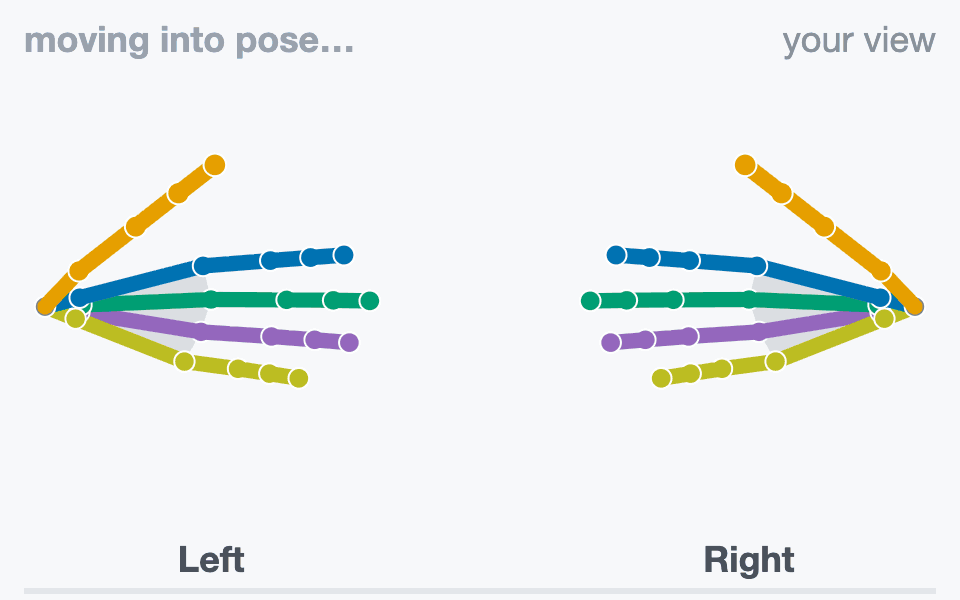
hold 3 s “Raise both hands, palms facing you. Touch middle fingertips.”
Fingers point at each other; only the two middle fingertips touch.
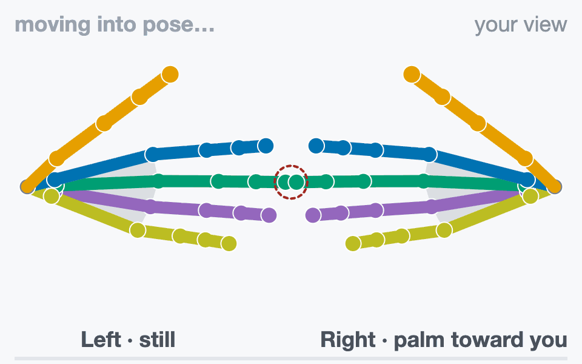
turn 6 s “Fingertips touching. At the tone, turn the right palm out, then back.”
Left hand still. At the beep, turn the right palm out at least 90° and back, tips touching.
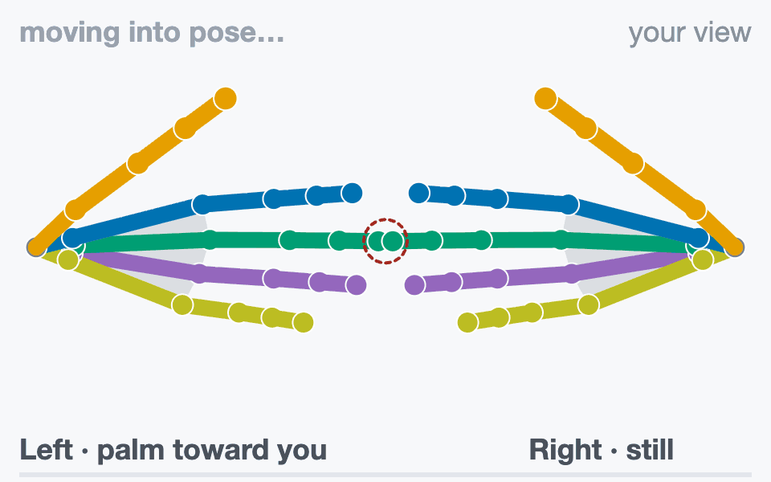
turn 6 s “Fingertips touching. At the tone, turn the left palm out, then back.”
Right hand still. At the beep, turn the left palm out at least 90° and back, tips touching.
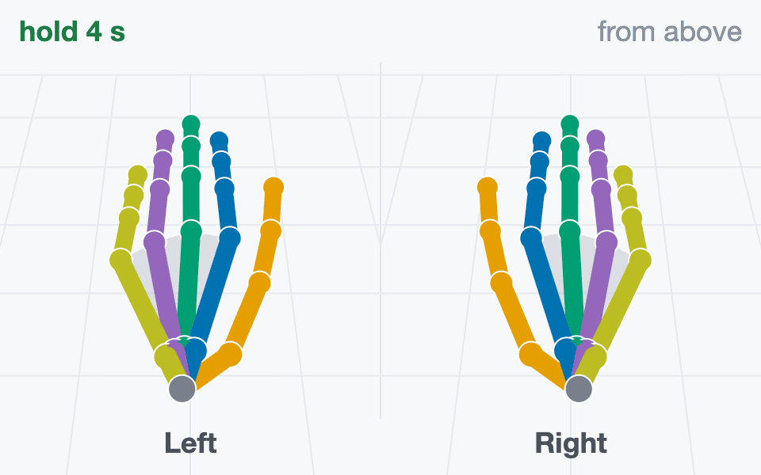
hold 4 s “Hands flat on the table again.”
Same as step 1: fingers straight and together, pressed onto the table.
A roll under 90°, or middle tips more than 8 cm apart in step 8, gives retake.
How often each of the 26 joints is valid is measured (coverage.),
not required.
Rehearse#
Download hand-rehearsal.mp3 (about 2 minutes). It
plays the cues, counts, beeps and ticks at the real timing. Perform along with it before
your first take.
Press and touch for real: hands on the table, palms together, fingertips meeting.
You cannot pause or skip. If a step goes wrong, let it finish and record again.
Practice takes cost nothing. Takes are never overwritten; submit your best one.
Have a helper watch the capture panel while you perform.
Record#
Run record.sh from the repository root. The first argument is required and names
your device: free text that names the take directory and files and is stored as
device in the provenance. The performer wears the connected headset; for headset
hands, or a glove wrist from hand tracking, it must see the hands.
Headset optical hands, no plugin:
src/python/isaaccapture/cts/hand/capture/record.sh quest3
A glove, through its plugin. glovex and glove_x_plugin are placeholders for a
fictional Glove X: use your device’s name and the name: from your plugin’s
plugin.yaml. The plugin is loaded from install/plugins/ (Set Up the Tools), and one that
fails to load stops the take. Environment variables your plugin reads, such as where it takes
the wrist pose from, go on the same command line.
src/python/isaaccapture/cts/hand/capture/record.sh glovex --plugin glove_x_plugin
--note TEXT, --plugin-version NAME=VERSION and --wrist-source SOURCE (where a
glove’s wrist pose comes from, such as hand_tracking or controller) are stored with the
take. --wrist-source defaults to the plugin’s own variable, named after it:
GLOVE_X_WRIST_SOURCE for glove_x_plugin (upper-cased, without _plugin). If your
plugin reads its wrist source from an environment variable, name it that way and takes are
labelled without the flag. Then:
Open the capture panel at the address the run prints: http://localhost:8081 unless that port was taken, or the
[capture] headset:address in the headset’s browser.Press Start recording. The script starts once both hands have had a valid joint. A red No hand data after 10 s box lists causes; the take keeps running.
Perform the eleven steps. After “Done. You can stop now.” the capture panel writes the labels and audits them, row by row,
okorBAD:BADonhand channelsorsegmentation.: one hand sent no records, or the step windows have no frames. Look at the data stream.label_ alignment BADonsegmentation.: a step was missed (the detail names it). Record another take.labelled_ step_ actually_ performed
Press Ctrl+C when you have read it.
~/isaaccapture-cts/glovex_2026-03-04_101530/
├── glovex_2026-03-04_101530-hand.mcap the recording
├── glovex_2026-03-04_101530-hand.labels.json one window per step
├── glovex_2026-03-04_101530-hand.json provenance: device, plugins, commit
└── glovex_2026-03-04_101530-hand.log capture panel output and label audit
Keep the four files together and never rename them. The labels are stamped during the take and cannot be regenerated.
Check#
Point the checker at the .mcap inside its take directory, so it finds the labels file
beside it (to check on another machine, copy the whole directory):
src/python/isaaccapture/cts/hand/checker/.venv/bin/python -m hand_cts.cli \
~/isaaccapture-cts/<take>/<take>-hand.mcap
It prints the verdict and one line per check, and exits 0 pass, 1 fail, 2 retake
or 3 insufficient_data, or 4 when the check could not run; Verdicts
says what each means and what to do.
Each [FAIL] line names the check and what it measured;
hand/checker/README.md
explains every check. The output for a synthetic reference take, shortened:
source hand/oracle/fixtures/golden_full_script.mcap
frames 8100
topic hands/left_hand schema core.HandPoseRecord
verdict PASS
…
[pass] rate.minimum_rate left: 60.0 Hz; right: 60.0 Hz
[pass] rate.frame_gaps left: no gaps; right: no gaps
[pass] continuity.max_joint_velocity left: peak 1.5 m/s; right: peak 1.5 m/s
…
[pass] posture.fist_closure left: straightness 0.39; right: straightness 0.39
…
[pass] palms.fingertip_gap index 18 mm, middle 22 mm, ring 18 mm, little 10 mm
…
If the report says no motion-step labels beside the recording, fix the path before
trusting a pass. --json prints the machine-readable report, --list-checks lists
every check without a recording, and --check NAME runs only that check.
View#
The viewer needs the checker environment set up with --panel (Set Up the Tools):
src/python/isaaccapture/cts/hand/checker/.venv/bin/python -m hand_cts.panel \
~/isaaccapture-cts/<take>/<take>-hand.mcap
It prints the same report and the address it serves, http://127.0.0.1:8080 by default
(--host 0.0.0.0 to reach it from another machine). The viewer replays both hands with the
current step and lists the checks, the deciding ones first; invalid joints show red. Its
package for submission button builds the archive you send: see Submit Your Results.

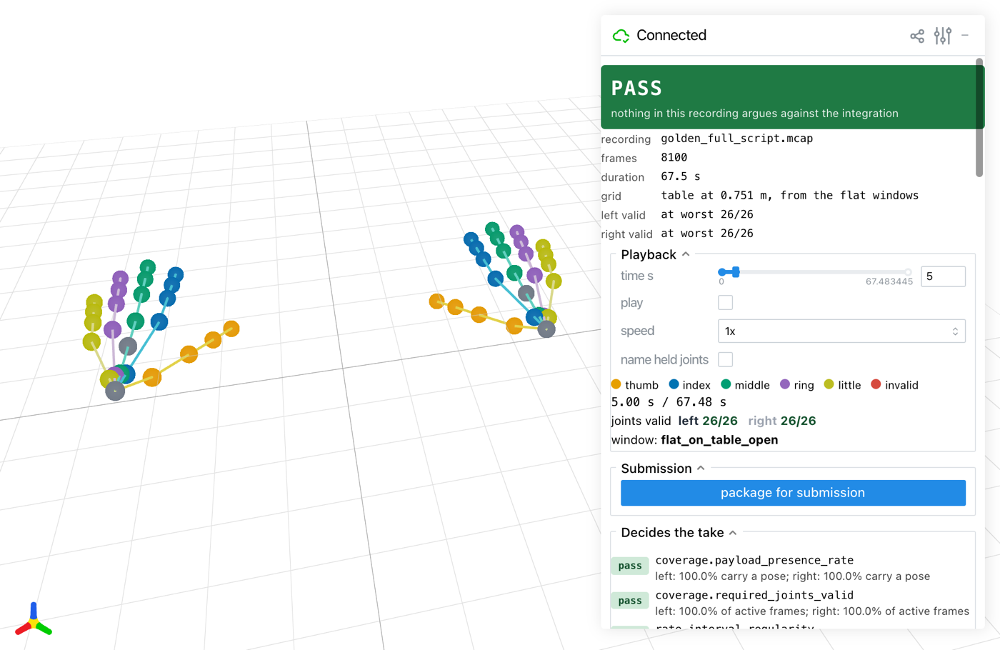
The viewer on a synthetic reference take, during step 1.#
Troubleshooting#
What you see |
What to do |
|---|---|
Start recording hangs after |
No headset is connected to CloudXR; connect it (Set Up the Tools) and the take goes on. Ctrl+C does not work here; close the terminal to get out. |
No hand data after 10 s |
Plugin: it exited, the glove is off, unpaired or uncalibrated, or no wrist source is tracked. Headset: hand tracking is off or the hands are out of view. |
The capture panel shows |
Expected for a 21-joint glove; only the 21 required joints are judged. |
The capture panel says Spoken cues are off |
|
|
Install |
the session did not open: … Required plugin … was not discovered, or |
|
More in hand/README.md (recording) and hand/checker/README.md (every check and the report format).